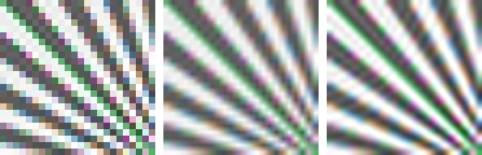
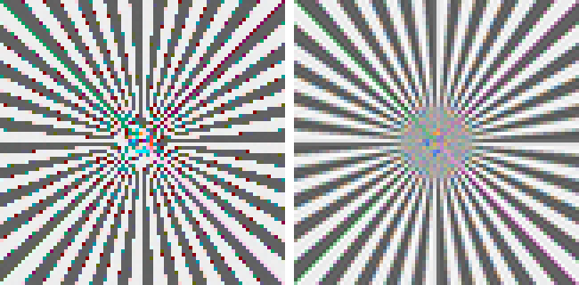
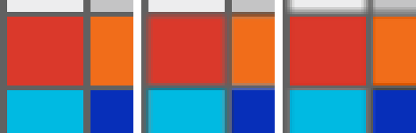
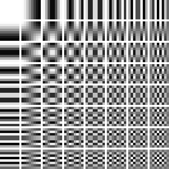
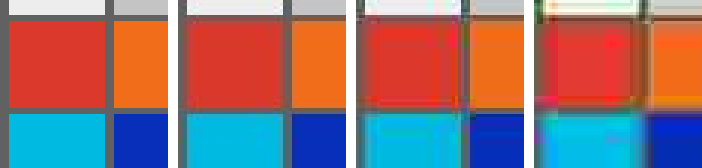

The photograph is finished; what remains is the leaving. Every step in this chapter throws information away on purpose — pixels, color resolution, frequency precision — and every step hides the theft behind some measured limit of human vision. That is not a compromise of the pipeline; it is the pipeline’s final skill. By the last section the image will be a stream of bytes any device on earth can open, at a twentieth of its uncompressed size, and a viewer will struggle to say what was taken.
9.1Resampling: deciding what lies between the samples
Almost no photograph is delivered at sensor resolution. Between the samples of the smaller (or larger) grid and the samples we have, there is no image — only a claim about what the samples imply. Every resampling kernel is such a claim. Nearest-neighbor claims nothing changes until the next sample. The tent (bilinear’s kernel) claims values ramp linearly. At the top of the family sits the windowed sinc, the reconstruction filter sampling theory itself would choose:
code/pxp/resample.pydef lanczos(x, lobes=3):
"""The windowed sinc: the ideal reconstruction filter of
sampling theory, cut off after three lobes so it fits in a
program. The strongest negative lobes of the family — the most
detail preserved, the most ringing risked."""
x = abs(x)
if x >= lobes:
return 0.0
if x == 0.0:
return 1.0
px = math.pi * x
return lobes * math.sin(px) * math.sin(px / lobes) / (px * px)

Enlarging is the easy direction — any kernel, drawn across the gaps. Shrinking is where resampling is silently gotten wrong, because a kernel used at its natural width simply skips most of the source pixels: shrink four-fold and each output pixel is answerable for a 4x4 patch of input, not for the one point under its center. The fix is one line — stretch the kernel by the shrink factor — and it lives here, in the function both code tiers share:
code/pxp/resample.pydef axis_weights(src, dst, kernel, support):
"""Tap start and normalized weights for every output position
along one axis.
The one subtlety of resampling lives here: when shrinking, the
kernel is stretched by the shrink factor, so each output pixel
drinks from the whole span of source pixels it replaces. Skip
that and every kernel aliases like nearest. The pipeline tier
imports this function as-is — the weights are the algorithm."""
scale = src / dst
stretch = max(1.0, scale)
taps = int(math.ceil(support * stretch)) * 2
table = []
for o in range(dst):
center = (o + 0.5) * scale - 0.5
start = int(math.floor(center)) - taps // 2 + 1
weights = [kernel((center - (start + k)) / stretch)
for k in range(taps)]
total = 0.0
for weight in weights:
total += weight
table.append((start, [weight / total for weight in weights]))
return table

One craft note with a measurement attached. Chapter 8’s unsharp mask builds halos a pixel or two wide — creatures of the pixel grid, not of the scene. Shrink the image afterward and the halos shrink with it, mostly below visibility: sharpening our starburst at 320 and then downscaling to 80 raises mean edge contrast only from 0.165 to 0.183, while the same sharpening applied after the shrink raises it to 0.270. Sharpen last, at delivery size — the “output sharpening” step every workflow guide insists on, here reduced to a measurement.
9.2Eight bits, on purpose
Chapter 7 built the border crossing — the transfer function that spends display range in perceptual steps — and every figure in this book has quietly finished the trip: write_png clips to [0, 1], multiplies by 255, and rounds. That rounding is the book’s oldest continuous loss, and it is time to say why it is safe. Eight bits give 256 levels; after the sRGB curve those levels are spaced in roughly equal perceptual steps, each near the threshold where adjacent patches become distinguishable. Spend the same 256 levels on linear light and the shadows band visibly — Chapter 2 made that argument in reverse when it explained why sensors need 12 bits or more for scenes displays describe in 8. The exception proves the design: push a heavy edit on 8-bit material (lift a dark sky three stops) and the levels spread apart until banding surfaces, which is why editing pipelines stay in floats or 16 bits until the very end, and why HDR delivery formats pair their taller brightness range with 10 bits and a steeper curve. Quantization is fine where perception is flat and treacherous where it is steep; the rest of this chapter is that sentence, applied twice more.
9.3Chroma subsampling: half the numbers nobody counts
Human vision resolves brightness finely and color coarsely — the retina pools its color-opponent signals over larger areas than its luminance signal. Television engineering has banked on this since before computers: transmit brightness at full resolution and color differences at a fraction. JPEG inherited the scheme wholesale, so the first thing our encoder does is change basis — luma, plus two color-difference planes, Y = 0.299 R + 0.587 G + 0.114 B, with Cb and Cr as scaled “blue minus luma” and “red minus luma” centered on 128. Nothing is lost in the rotation; it merely gathers what the eye tracks sharply into one plane, so the next function can be rough with the other two. Video’s name for that roughness is 4:2:0 — legacy ratio notation that decodes, unhelpfully, to “chroma at half resolution in both directions” — and its entire mechanism is an average:
code/pxp/jpeg.pydef subsample(plane):
"""4:2:0's whole mechanism: average each 2x2 quad to one value.
Run on the chroma planes it discards three quarters of the
color numbers, and Chapter 9's figure shows how little that
matters — the eye's own chroma resolution is the lossy step
this one hides behind."""
out = []
for y in range(0, len(plane), 2):
row = []
for x in range(0, len(plane[0]), 2):
row.append((plane[y][x] + plane[y][x + 1]
+ plane[y + 1][x]
+ plane[y + 1][x + 1]) * 0.25)
out.append(row)
return out
Y at full resolution plus two chroma planes at a quarter each: the image is now described in half as many numbers, before any compression proper has begun. The figure is the argument for why this is allowed — and it carries a lesson about meters:

9.4The JPEG: frequencies, rounded
What remains after subsampling is three planes of numbers, and the remaining task is the one this book has deferred since its title page: make them small. JPEG’s insight — thirty years old and not yet dislodged from cameras — is that the place to be inaccurate is neither pixels nor colors but frequencies. Carve each plane into 8x8 blocks and measure each block against 64 cosine patterns:
code/pxp/jpeg.pydef dct8(vector):
"""One row of the DCT-II: eight samples in, eight frequency
amounts out. Each output asks 'how much of this cosine is in
the signal?' — the zeroth cosine is flat, so the first answer
is the block's average, and every later one is a finer
ripple."""
out = []
for u in range(8):
total = 0.0
for x in range(8):
total += vector[x] * COSINES[u][x]
out.append(HALF_C[u] * total)
return out
Applied to rows and then columns, this is the discrete cosine transform, and the 64 patterns it measures against are worth one long look:

The loss happens in one line: divide each coefficient by an entry from an 8x8 table and round to an integer. The tables — one for luma, a harsher one for chroma — encode measured visibility: low frequencies, which the eye tracks closely, get small divisors, and the finest checkerboards get divisors so large that middling amounts round away to nothing. The famous 1–100 quality dial is just a scale factor on those tables:
code/pxp/jpeg.pydef quality_tables(quality):
"""The standard's example tables — measured from how visible
each frequency's error is — scaled by the famous 1..100 quality
knob (the Independent JPEG Group's formula, inherited by every
tool since). The numbers are
divisors: at quality 50, a luma block's highest frequency is
divided by 121 and rounded, and that rounding is the entire
loss in a JPEG."""
quality = min(100, max(1, quality))
if quality < 50:
scale = 5000 // quality
else:
scale = 200 - 2 * quality
tables = []
for base in (QUANT_LUMA, QUANT_CHROMA):
tables.append([min(255, max(1, (value * scale + 50) // 100))
for value in base])
return tables
After rounding, a typical block is a handful of small integers in its low corner and zeros everywhere else, and the rest of the format is devoted to spending as few bits as possible on that shape. First the coefficients are read out in an order that pools the zeros:
code/pxp/jpeg.pydef zigzag_order():
"""Walk the 8x8 grid by anti-diagonals, alternating direction:
lowest frequencies first, so a typical block's many rounded-to-
zero high frequencies pool into one long run at the end — which
the entropy coder will spend a single symbol on."""
order = []
for diagonal in range(15):
ys = range(max(0, diagonal - 7), min(7, diagonal) + 1)
if diagonal % 2 == 0:
ys = reversed(ys)
for y in ys:
order.append(y * 8 + (diagonal - y))
return order
Then Huffman coding: frequent symbols get short bit strings, rare ones long. The codes themselves are never listed in the file — each table ships as a two-hundred-byte recipe, a count of codes per length followed by the symbols in order, from which encoder and decoder rebuild identical code books. What the codes are spent on is the shape quantization left behind:
code/pxp/jpeg.pydef encode_block(zigzagged, predicted_dc, dc_codes, ac_codes,
writer):
"""One block into the bitstream. The DC coefficient is coded as
a difference from the previous block's (neighboring averages
are alike — one last exploitation of image structure); each AC
symbol is (zeros skipped, size of what follows); a special
symbol ends the block early, and on most blocks it arrives
early indeed. Negative values are sent as their bit pattern
minus one, so the size field alone tells the decoder the
sign."""
difference = zigzagged[0] - predicted_dc
size = _bit_length(difference)
code, length = dc_codes[size]
writer.write(code, length)
if size:
amplitude = difference if difference > 0 \
else difference + (1 << size) - 1
writer.write(amplitude, size)
run = 0
for value in zigzagged[1:]:
if value == 0:
run += 1
continue
while run > 15:
code, length = ac_codes[0xF0] # sixteen zeros
writer.write(code, length)
run -= 16
size = _bit_length(value)
code, length = ac_codes[run * 16 + size]
writer.write(code, length)
amplitude = value if value > 0 else value + (1 << size) - 1
writer.write(amplitude, size)
run = 0
if run:
code, length = ac_codes[0x00] # end of block
writer.write(code, length)
return zigzagged[0]
Wrap the scan in its markers — dimensions, the quantization tables, the Huffman recipes, a JFIF signature (the JPEG File Interchange Format tag that promises a decoder the plain conventions used here) — stuff a zero byte after any 0xFF the bitstream produces so data can never impersonate a marker, and the pipeline’s last function is nine lines:
code/pxp/jpeg.pydef encode(image, quality=90):
"""Display-referred RGB in, .jpg bytes out — the last function
of the pipeline."""
luma, cb, cr = rgb_to_ycbcr(image)
luma = pad(luma, 16)
cb = subsample(pad(cb, 16))
cr = subsample(pad(cr, 16))
luma_table, chroma_table = quality_tables(quality)
return serialize(image.width, image.height, quality,
component_blocks(luma, luma_table),
component_blocks(cb, chroma_table),
component_blocks(cr, chroma_table))
Three verifications close the loop, in ascending order of satisfaction. The tables our encoder writes — quantization and Huffman both — are byte-identical to the ones libjpeg, the reference library behind nearly every program that opens a JPEG, has shipped since 1991; they are the standard’s own example tables, reproduced from its text. The two code tiers, one looping over Python lists and one running whole-array arithmetic, emit byte-identical files. And Pillow — an independent decoder that owes our code nothing — opens those files and reads back the image, measured at 29 dB against what went in:

Patent note
Baseline JPEG is the safest major format there is to reimplement: the standard is from 1992, its underlying patents have long expired, and the reference tables ship in the standard’s own annex. The one corner to avoid historically was the optional arithmetic-coding mode, patent-encumbered for years and shunned by decoders for that very reason — every camera and browser speaks Huffman baseline, which is what we built. Some newer formats are a different story — HEIC sits on the actively licensed HEVC patent pool — and are, not coincidentally, formats nobody reimplements for fun.
Count what happened to one photograph on its way through this book. Photons became electrons in proportion no eye would accept; electrons became one number per site behind colored glass; the numbers were rebalanced, tripled by interpolation, rotated into meaningful color, unwarped, curved, sharpened, quieted — and finally described as rounded frequencies and dealt out as bits. From light to JPEG, the long way, with every step written down. One chapter remains: point the whole apparatus away from the simulator and at a real camera’s raw file, and see how our pipeline’s picture compares with the one the camera itself would have made.